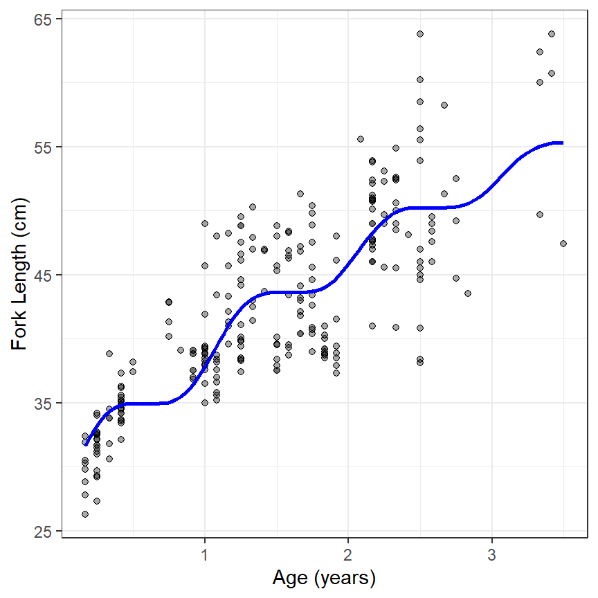

I recently published a technical note in Fisheries Research (Ogle 2017) that described an algorithm for implementing the “seasonal cessation in growth model” of Pauly et al. (1992). Describing an algorithm for a growth model does not seem like a useful contribution to the literature, as fitting growth models is pretty standard fare for fisheries scientists. However, fitting the Pauly et al. (1992) model is complicated by the fact that the age data is modified by model parameters. This too may not seem particularly interesting given that \(t_0\) in the typical von Bertalanffy growth function (VBGF) also modifies the age variable (i.e., age-\(t_0\) appears in the VBGF equation). However, the modification of age in the Pauly et al. (1992) model is a shift AND a compression of the age variable, AND the degree of shift and compression is a function of age. This is different, and more complicated, than the simple shift along the age axis in the typical VBGF.
As I demonstrate in my note, the Pauly et al. (1992) model has, for all practical purposes, not been used in the fisheries literature. I believe this lack of use is largely attributable to lack of clarity in how to implement the model in computer code.1 My hope is that the algorithm in my note will clarify the implementation of this model. Fisheries scientists can then rigorously test whether this model provides any advantage over other growth models with a seasonal component.
1 Pauly et al. (1992) did provide a brief description of their model, but not a detailed description of how the age variable was adjusted, and computer software for fitting their model, though that software, and its source code, have long been lost.
Full R code implementin the algorithm is available here. Implementation of the algorithm depends on the FSA package, which is available on CRAN. Please let me know what you think.

References
- Ogle, D. H. 2017. An algorithm for the von Bertalanffy seasonal cessation in growth function of Pauly et al. (1992). Fisheries Research 185:1-5.
- Pauly, D., M. Soriano-Bartz, J. Moreau, and A. Jarre-Teichmann. 1992. A new model accounting for seasonal cessation of growth in fishes. Australian Journal of Marine and Freshwater Research 43:1151–1156.
Reuse
Citation
@online{h.ogle2016,
author = {Derek H. Ogle},
title = {Pauly *Et Al.* (1992) {Seasonal} {Cessation} {Growth}
{Model}},
date = {2016-11-11},
url = {https://fishr-core-team.github.io/fishR//blog/posts/2016-11-11_Pauly-VBModel},
langid = {en}
}